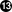
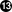

Like many production quality operating systems, FreeBSD publishes «Security Advisories». These advisories are usually mailed to the security lists and noted in the Errata only after the appropriate releases have been patched. This section will work to explain what an advisory is, how to understand it, and what measures to take in order to patch a system.
The FreeBSD security advisories look similar to the one below, taken from the freebsd-security-notifications mailing list.
=============================================================================
FreeBSD-SA-XX:XX.UTIL Security Advisory
The FreeBSD Project
Topic: denial of service due to some problem Category: core
Category: core Module: sys
Module: sys Announced: 2003-09-23
Announced: 2003-09-23 Credits: Person@EMAIL-ADDRESS
Credits: Person@EMAIL-ADDRESS Affects: All releases of FreeBSD
Affects: All releases of FreeBSD FreeBSD 4-STABLE prior to the correction date
Corrected: 2003-09-23 16:42:59 UTC (RELENG_4, 4.9-PRERELEASE)
2003-09-23 20:08:42 UTC (RELENG_5_1, 5.1-RELEASE-p6)
2003-09-23 20:07:06 UTC (RELENG_5_0, 5.0-RELEASE-p15)
2003-09-23 16:44:58 UTC (RELENG_4_8, 4.8-RELEASE-p8)
2003-09-23 16:47:34 UTC (RELENG_4_7, 4.7-RELEASE-p18)
2003-09-23 16:49:46 UTC (RELENG_4_6, 4.6-RELEASE-p21)
2003-09-23 16:51:24 UTC (RELENG_4_5, 4.5-RELEASE-p33)
2003-09-23 16:52:45 UTC (RELENG_4_4, 4.4-RELEASE-p43)
2003-09-23 16:54:39 UTC (RELENG_4_3, 4.3-RELEASE-p39)
FreeBSD 4-STABLE prior to the correction date
Corrected: 2003-09-23 16:42:59 UTC (RELENG_4, 4.9-PRERELEASE)
2003-09-23 20:08:42 UTC (RELENG_5_1, 5.1-RELEASE-p6)
2003-09-23 20:07:06 UTC (RELENG_5_0, 5.0-RELEASE-p15)
2003-09-23 16:44:58 UTC (RELENG_4_8, 4.8-RELEASE-p8)
2003-09-23 16:47:34 UTC (RELENG_4_7, 4.7-RELEASE-p18)
2003-09-23 16:49:46 UTC (RELENG_4_6, 4.6-RELEASE-p21)
2003-09-23 16:51:24 UTC (RELENG_4_5, 4.5-RELEASE-p33)
2003-09-23 16:52:45 UTC (RELENG_4_4, 4.4-RELEASE-p43)
2003-09-23 16:54:39 UTC (RELENG_4_3, 4.3-RELEASE-p39) CVE Name: CVE-XXXX-XXXX
CVE Name: CVE-XXXX-XXXX For general information regarding FreeBSD Security Advisories,
including descriptions of the fields above, security branches, and the
following sections, please visit
http://www.FreeBSD.org/security/.
I. Background
For general information regarding FreeBSD Security Advisories,
including descriptions of the fields above, security branches, and the
following sections, please visit
http://www.FreeBSD.org/security/.
I. Background II. Problem Description
II. Problem Description III. Impact
III. Impact IV. Workaround
IV. Workaround V. Solution
VI. Correction details
V. Solution
VI. Correction details VII. References
VII. References
| The |
| The |
| The |
| The |
| The |
| The |
| The |
| Reserved for the identification information used to look up vulnerabilities in the Common Vulnerabilities Database system. |
| The |
| The |
| The |
| The |
The | |
| The |
| The |